Hidden review route · P050 · draft only
KS Active Racer Knit Bra
The complete P050 stocked-colour review is ready. It is unlinked, non-indexed, non-purchasable and excluded from collections, search, structured data and the sitemap.
Complete visual review
Espresso is the exact Drive construction authority. Dark Green, Iron Blue and Violet are draft representations based on their explicit manual stock labels—never claimed as exact Drive colour photography. No colour was generated for a size, product or colour without confirmed stock.
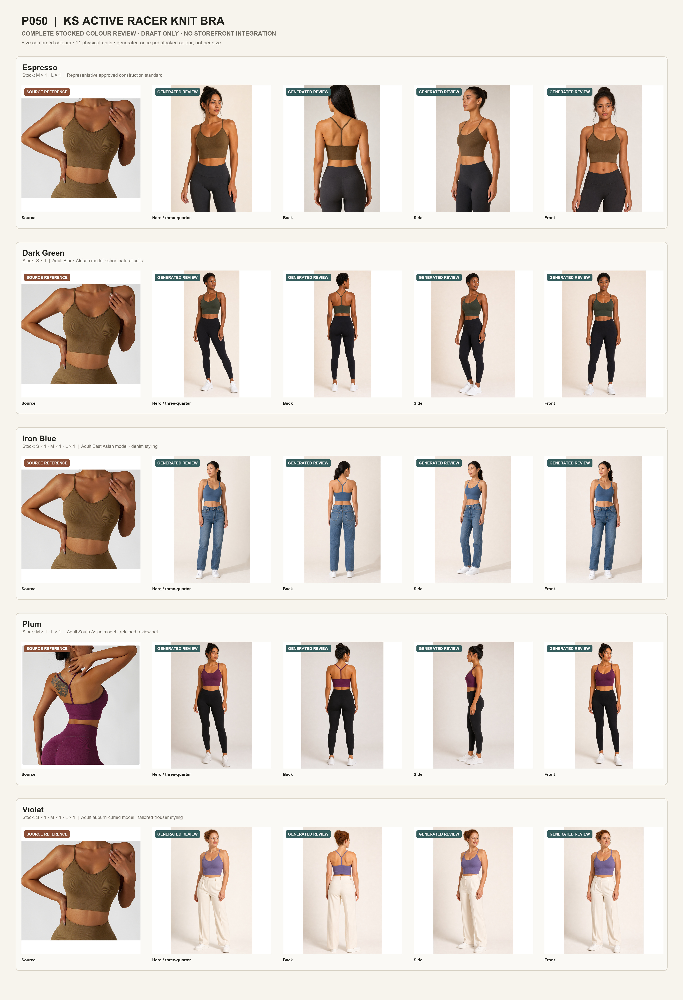
Espresso
Exact Drive reference first, followed by generated model-review views.


Dark Green
Manual stock label: Dark Green · S × 1. Espresso remains the exact Drive construction source.
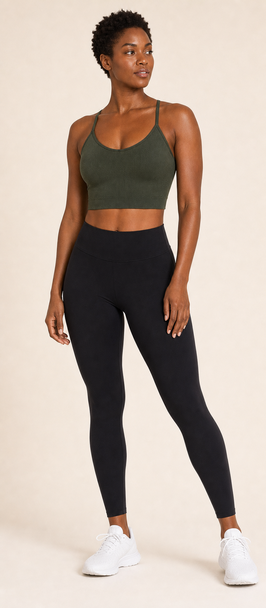
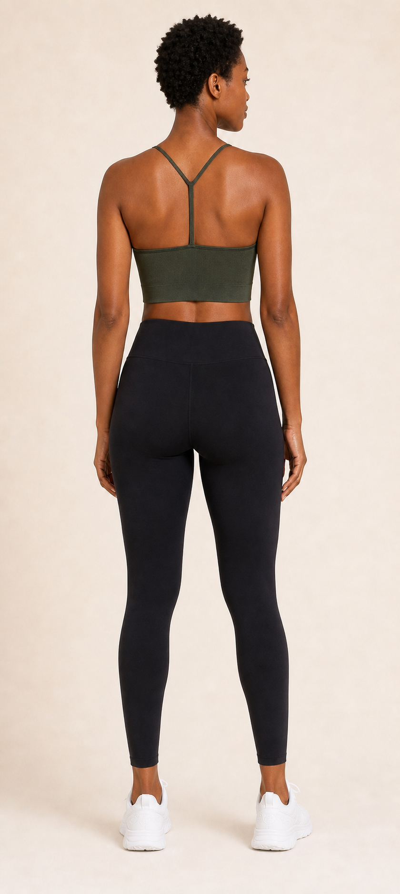
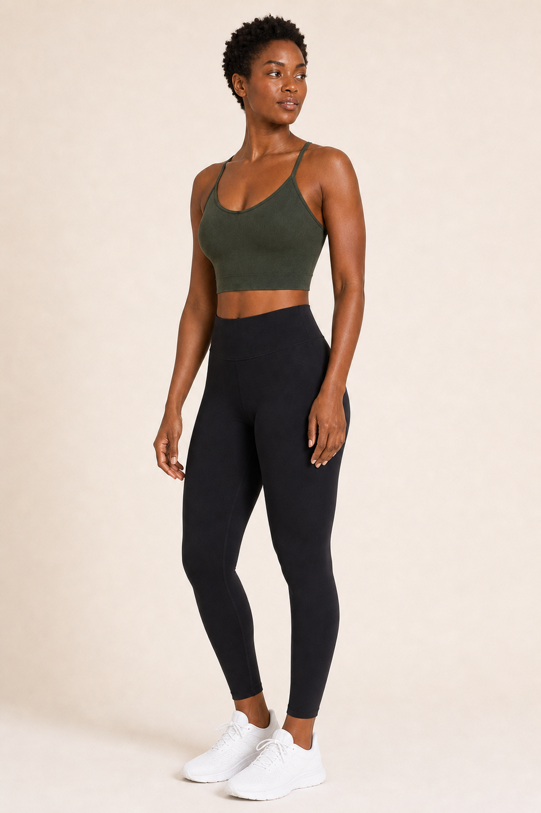
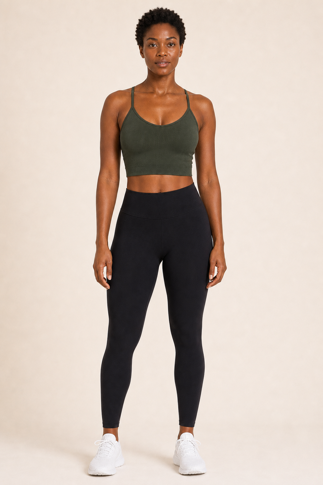
Iron Blue
Manual stock label: Iron Blue · S × 1, M × 1, L × 1. Espresso remains the exact Drive construction source.
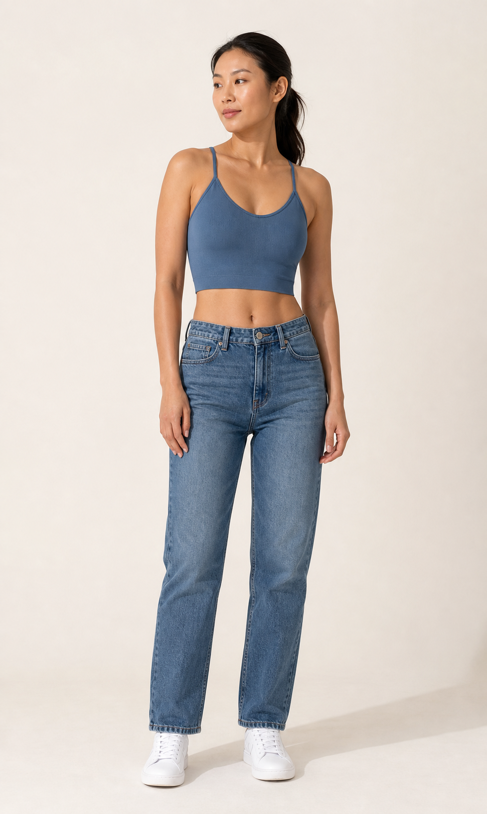
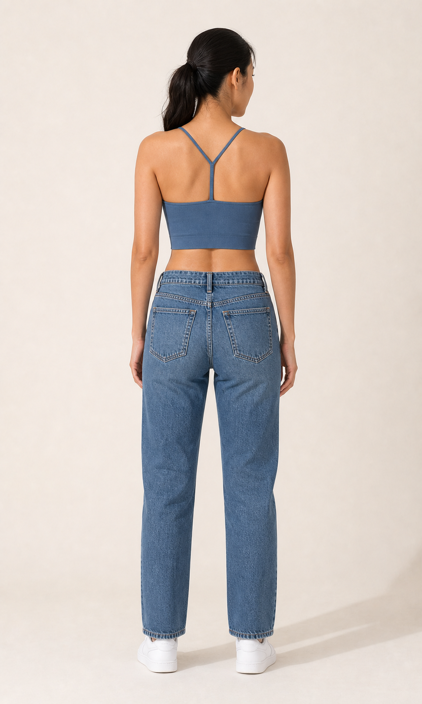
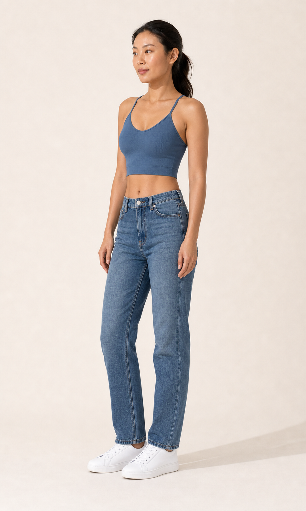
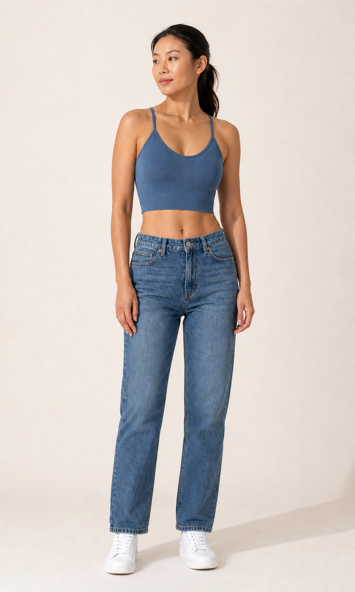
Plum
Manual stock label: Plum · M × 1, L × 1. The first image is the unaltered historical Plum Drive source.


Violet
Manual stock label: Violet · S × 1, M × 1, L × 1. Espresso remains the exact Drive construction source.
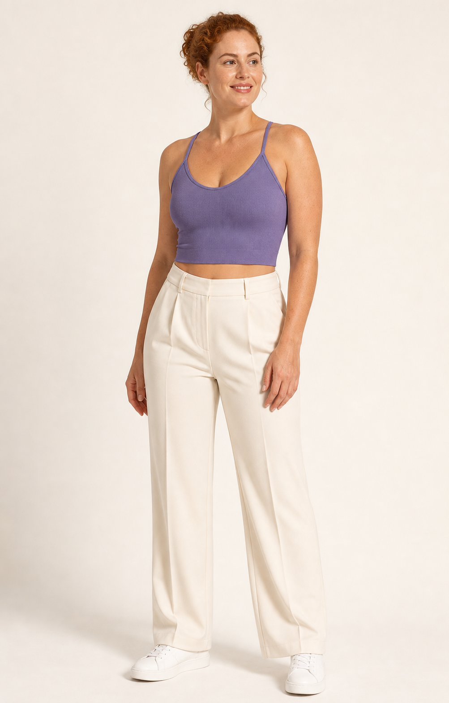
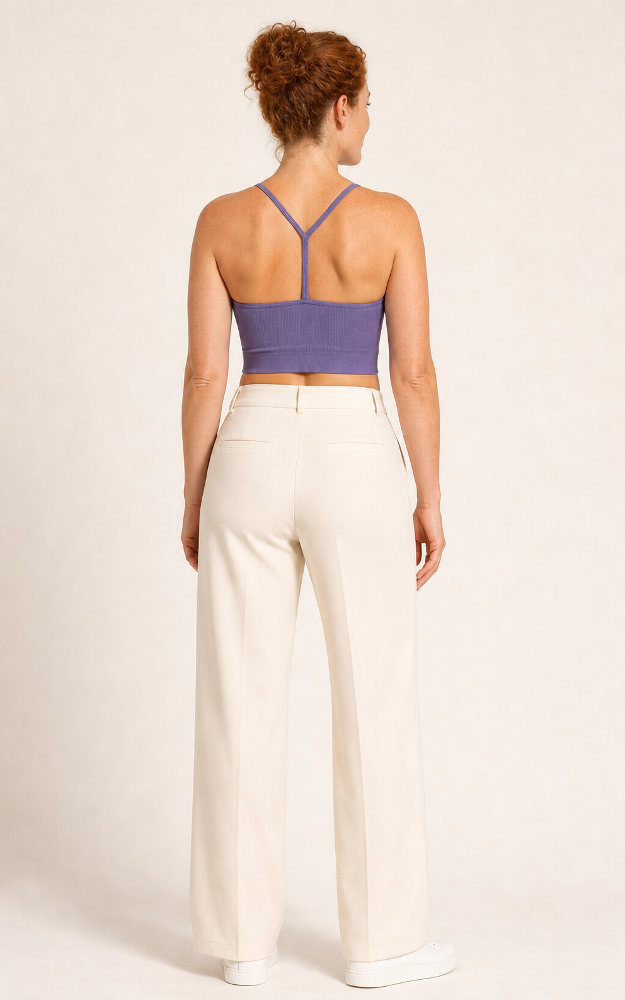
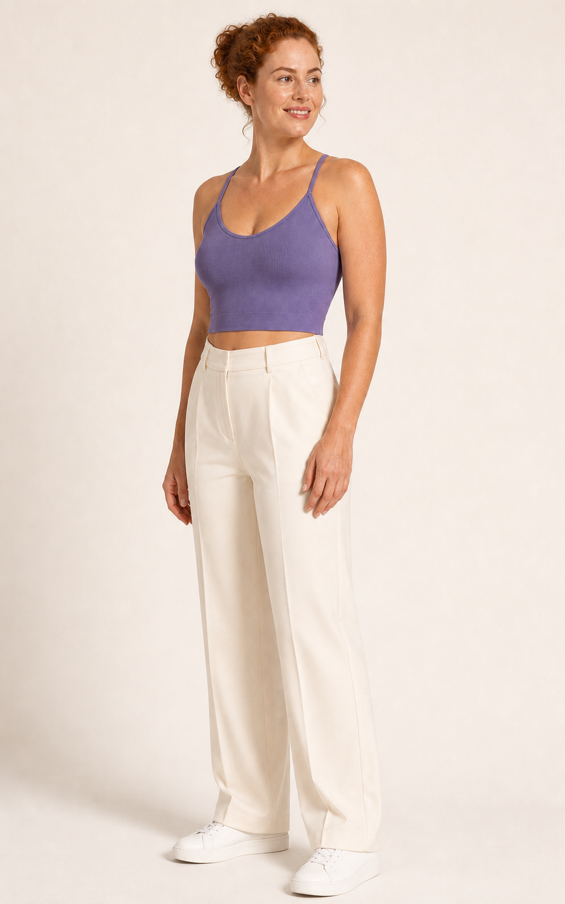
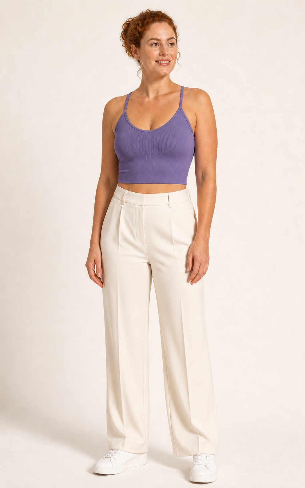
Construction evidence
A single construction comparison shows the unaltered Espresso Drive source with the generated hero for each confirmed stocked colour.